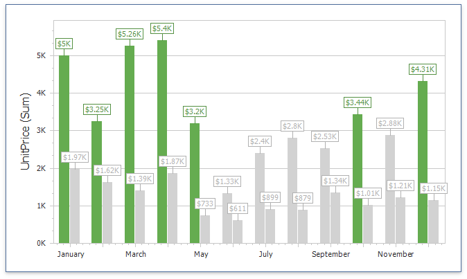
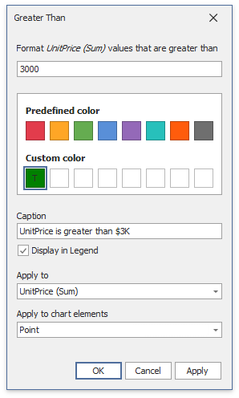
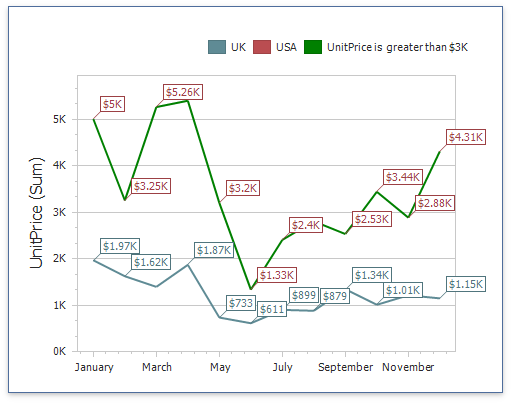
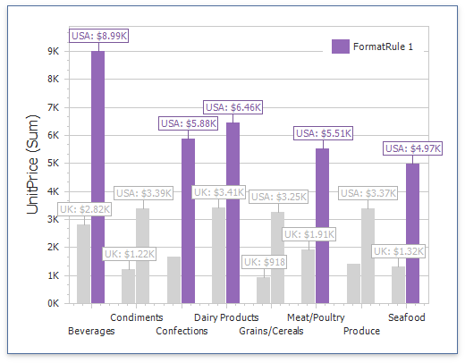

Conditional Formatting
Use conditional formatting to highlight chart elements such as bars, lines, areas, and data points.
The following series types support conditional formatting:

Supported Format Rules
You can use the following data in rule calculations:
- measures from the Values section
- dimensions from the Arguments/Series section
- hidden measures
The following list contains available format rules and corresponding data types:
- numeric
- string
- Value (with a condition type set to Equal To, Not Equal To or Text that Contains)
- Expression
- date-time
- Value
- A Date Occurring (for dimensions with a continuous date-time group interval)
- Expression
- Color Ranges
- Gradient Ranges
Create and Edit a Format Rule
You can create and edit format rules in the following ways:
Click the Edit Rules button on the Home ribbon tab.
Click the measure/dimension menu button in the Data Item's pane and select Add Format Rule/Edit Rules.
Refer to the following topic for information on how to create and edit format rules: Conditional Formatting Common.
Chart-Specific Format Condition Settings
Specify appearance settings and set the condition's value to create a format rule. Available settings depend on the selected format condition type.
The image below displays the Greater Than dialog (a Value format condition applied to a chart). The condition colors points/bars if their values exceed 3000.

Enable Display in Legend to add information about the applied rule to the chart. Set the Caption field to specify the legend's text. For Range format rules, the legend's text is generated automatically and depends on the range intervals.
Use the Apply to chart elements drop-down list to apply a rule to points or lines.
- Point: A rule applies to the data points such as bars, points and bubbles.
- Line/Area: A rule applies to lines and areas.
The image below displays the Chart item with the applied Greater Than format rule. The Apply to chart elements option is set to Point and the rule is applied to points of the line series.

If you select Line/Area, the format rule applies to the line when at least one line point meets the rule's condition:

Coloring
A Chart item paints elements in pale gray if they do not meet the applied format condition. Note that this does not apply to elements that use the Hue color mode.

Select the Color by Hue option in a Data item's pane to restore the color scheme.

Tip
Documentation: Chart - Coloring